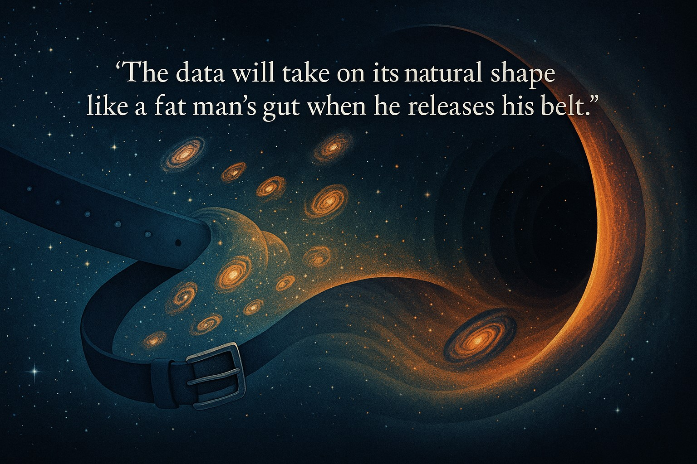
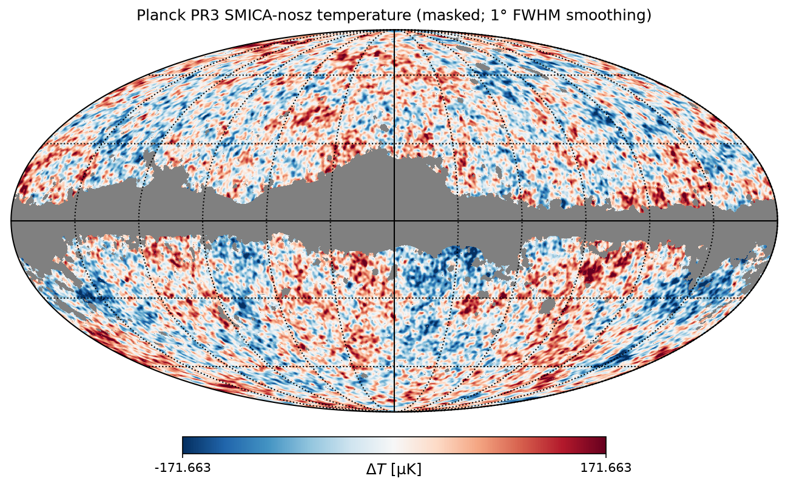

External Gravity Cosmology
A pull from outside, not a push from inside.

The idea
External Gravity Cosmology (EGC) proposes that the universe we can see is only one patch of a much larger universe. Beyond the edge of our view, matter is spread unevenly. Its gravity still pulls on everything we can see.
What it could explain
The universe appears to be growing faster over time, which most astronomers put down to an unseen “dark energy.” An uneven pull from outside could explain this instead, with no dark energy and no Big Bang as a starting point. It could also explain patterns in how light from distant galaxies is stretched, and uneven spots in the faint microwave glow that fills the sky.

How to test it
If the pull is real, the sky should look slightly different depending on which way we look. The papers list checks that current and planned telescopes can make. Clear results either way would help settle the question.